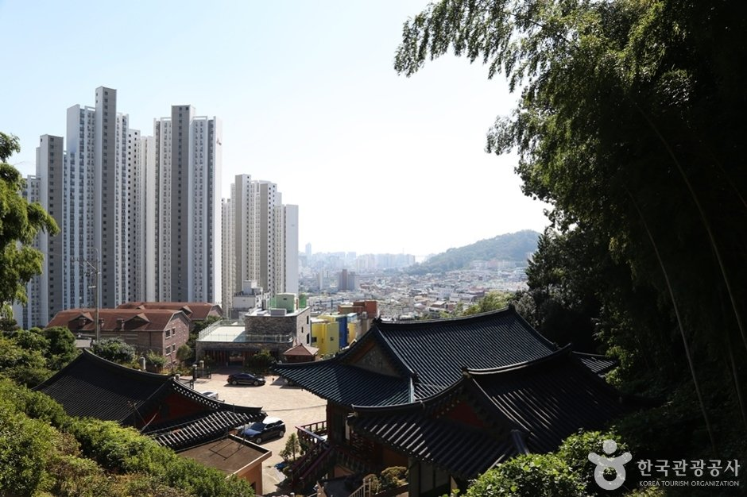
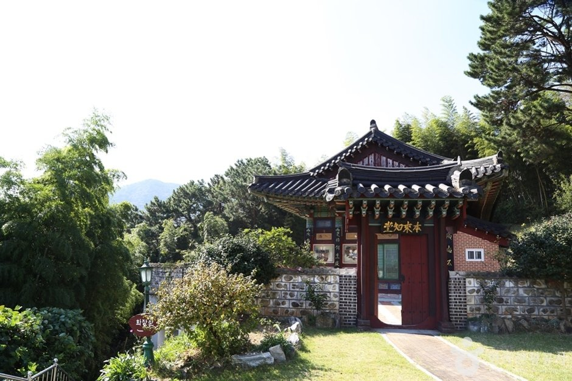
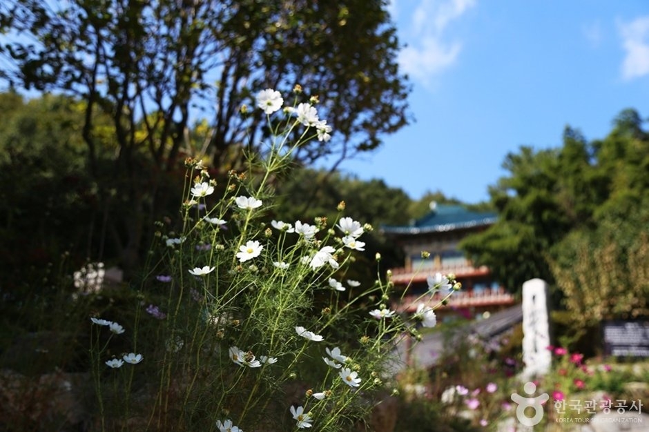
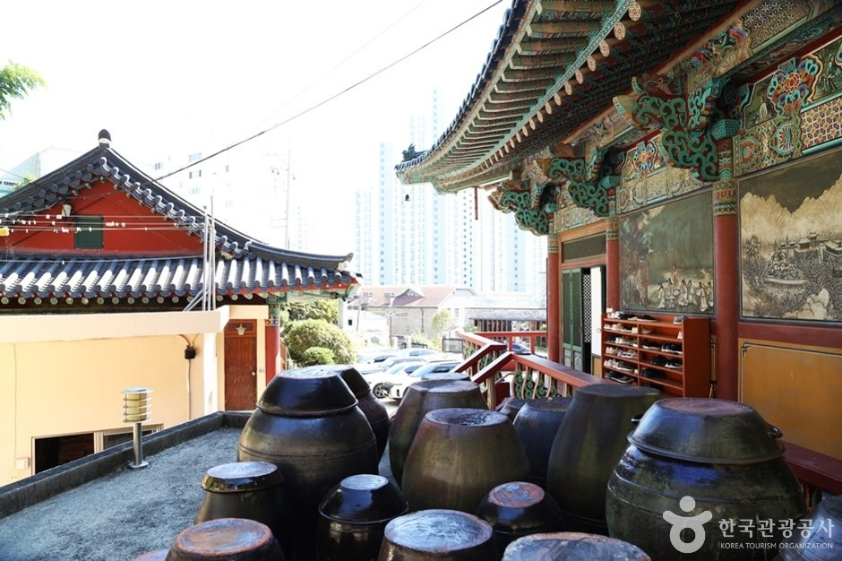

Yeongjuam Temple Busan Guide: Overview
This Yeongjuam Temple Busan guide takes you to a quiet Buddhist temple tucked into the slopes of Baesan Mountain in Mangmi-dong, Suyeong-gu. Yeongjuam (영주암) belongs to the Jogye Order as a branch temple of Beomeosa, and its roofs sit right next to Busan apartment towers, a striking mix of old and new.
It's free, open year-round and only a short ride from Gwangalli Beach, so it's an easy, crowd-free half hour of calm on a Busan trip.

A Short History: From Cave Hermitage to City Temple
According to the Korea Tourism Organization, the temple began in 1540 as a small cave hermitage called Togok-jeol. When it was rebuilt in 1940, it took the name Yeongjuam (瀛州庵), after Yeongju, a legendary mountain of immortals. In 1972 the monks Jeonggwan and Beomsan began rebuilding it from a single small hall into today's temple.
Yeongjuam is also known for community work. It runs or supports welfare groups, including senior housing, a welfare center and a youth center, and there's a daycare and kindergarten on the grounds.


What to See: Halls, Jars and City Views
- Daeungjeon: The main dharma hall is a two-story building with ornate multi-bracket (dapo) roof work. The upper floor is the worship hall, and the lower floor holds the office and kitchen.
- Wontongbojeon and Samseonggak: Smaller halls for Avalokiteshvara (the bodhisattva of compassion) and for the three folk-Buddhist guardian spirits.
- Jangdokdae: Rows of brown onggi jars for soy sauce and pastes, a classic temple-kitchen sight.
- Seasonal flowers: Cosmos and other flowers bloom around the halls in autumn.


Visitor Information
| Item | Details |
|---|---|
| Name | Yeongjuam Temple (영주암) |
| Order | Jogye Order of Korean Buddhism · branch temple of Beomeosa |
| Address | 15 Mangmibaesan-ro 76beon-na-gil, Suyeong-gu, Busan (부산 수영구 망미배산로76번나길 15) |
| Hours | Open year-round (always open) |
| Closed | No closing days |
| Admission | Free |
| Parking | Available (limited; it's a hillside site) |
| Strollers | Not practical (slopes) |
| Phone | +82-51-754-2210 |
| Website | youngjuam.org (Korean) |
Sources: Korea Tourism Organization (한국관광공사) TourAPI and Visit Korea listing. Photos © Korea Tourism Organization (KOGL Type 3). We didn't add any AI-generated images. Details may change, so check before you go.
Getting There
- Subway: Busan Metro Line 3 to Mangmi or Baesan Station, then walk uphill or take a short taxi. Search "영주암" in Naver Map or Kakao Map for the current walking route.
- Taxi: From Gwangalli Beach or Suyeong Station, it's a short ride. Show the driver "영주암".
- Combine: F1963 (the factory-turned-culture complex) is also in Mangmi-dong.
Temple Etiquette and Tips
- It's a working temple: keep voices low, don't enter halls during services, and ask before photographing monks or worshippers.
- Take off your shoes before entering a hall, and don't walk through the center door of the main hall.
- Dress modestly (cover shoulders and knees).
- There's no card payment on-site, so bring cash if you'd like to leave a donation or buy a candle.
- Allow 30–60 minutes. Morning light is the most peaceful.
Yeongjuam vs. Other Busan Spots
| Yeongjuam Temple | Gwangalli Beach | Namparang Trail (Oryukdo) | |
|---|---|---|---|
| Vibe | Quiet hillside temple | Lively beach and night views | Coastal cliff walk |
| Area | Suyeong-gu (Mangmi-dong) | Suyeong-gu | Nam-gu |
| Fee | Free | Free | Free (skywalk free) |
| Time needed | 30–60 min | 1–3 hours | 2–4 hours |
| Best for | Calm, culture, photos | Evenings, drone show | Hikers, ocean views |
Pros & Cons
✅ Pros
- Free, open every day, and rarely crowded.
- Real working temple with onggi jars and seasonal flowers.
- Great contrast of temple roofs and city towers.
- Short taxi from Gwangalli Beach.
⚠️ Cons
- Uphill access; not stroller-friendly.
- Little English signage.
- No card payment on-site.
- Smaller than famous temples like Beomeosa.
Who It Suits
- Great for: Travelers staying around Gwangalli or Suyeong who want a calm morning.
- Great for: Photographers who like old-meets-new city scenes.
- Great for: Repeat Busan visitors looking beyond the big-name temples.
- Less ideal: Families with strollers, or anyone with limited mobility.
Plan Your Busan Trip
Yeongjuam Temple FAQ
What is Yeongjuam Temple?
Yeongjuam (영주암) is a Buddhist temple of the Jogye Order on the slopes of Baesan Mountain in Mangmi-dong, Suyeong-gu, Busan. It's a branch temple of Beomeosa and is known locally for its quiet halls, city views and community welfare work.
Is there an entrance fee, and what are the hours?
Entry is free and the grounds are open year-round (always open, no closing days). Be quiet and respectful, as it's an active temple, and visit in daylight.
How do I get to Yeongjuam Temple?
Take Busan Metro Line 3 to Mangmi or Baesan Station, then walk uphill or take a short taxi ride. The address is 15 Mangmibaesan-ro 76beon-na-gil, Suyeong-gu. Check Naver Map or Kakao Map for the current route.
Is it easy for strollers and wheelchairs?
Not really. The temple sits on a slope, and the tourism listing says strollers aren't practical. Wear comfortable shoes.
What's nearby?
F1963, the cultural complex in a former wire factory, is also in Mangmi-dong. Gwangalli Beach and the Gwangan Bridge are a short taxi ride away, so you can pair a calm temple morning with a beach evening.